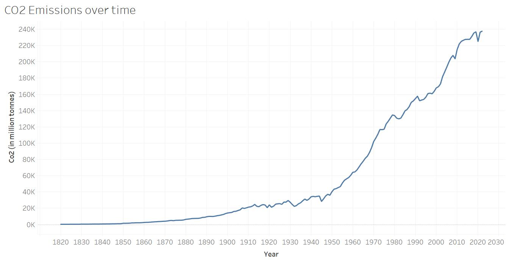
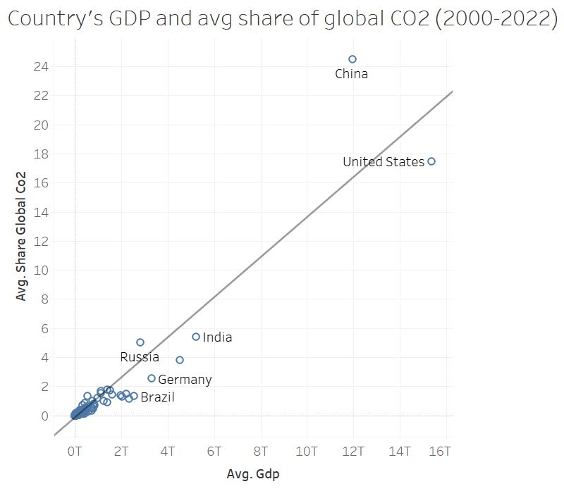
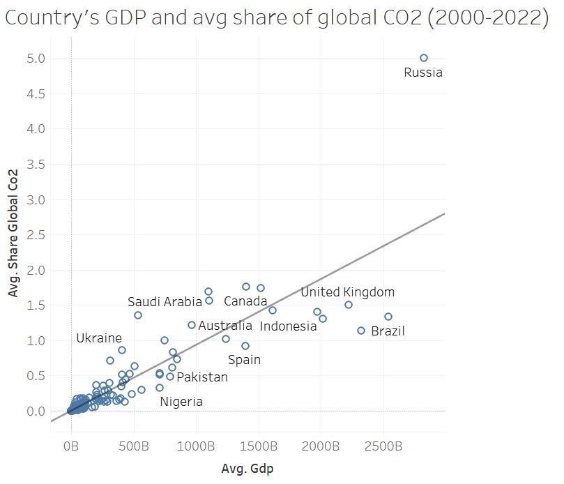

Analyzing Time Series Data: Greenhouse Gas Emissions and Global Climate Dynamics
I. Introduction
Background
My passion for environmental conservation and sustainable practices has always been a part of my life. This semester, I have the pleasure of taking ENEC 350: Environmental Law and Politics with Law Professor Donald Thomas Hornstein. I have learned about governmental regulations, including landmark legislation like the Comprehensive Environmental Response, Compensation, and Liability Act, as well as pivotal Supreme Court cases. Together, these regulations and law help build some rigidity in demanding positive environmental reform in the United States.
At the core of this project lies the desire to illuminate the complex relationship between global climate dynamics and greenhouse gas emissions. As highlighted by the Intergovernmental Panel on Climate Change, human activities have been the predominant cause in the surge in greenhouse gases within the atmosphere over the past 150 years. Despite these enduring trends spanning centuries, it has only been in the recent decades, notably towards the end of the 20th century, that climate change has garnered global attention, prompting a thorough understanding of its detrimental effects.
Tools Used
- RStudio
- Tableau
II. Data
Sources
I selected the dataset provided by Our World in Data, focusing on CO2 and Greenhouse Gas Emissions. This extensive dataset holds 48,058 observations and 79 variables, covering the period from 1750 to 2022 across 264 countries. I opted to narrow down my scope to the period from 1820 to 2022, as I deemed two centuries of data to be adequate for my analysis.
Key Variables
- CO₂: Annual CO₂ emissions - Annual total emissions of carbon dioxide (CO₂), excluding land-use change, measured in million tonnes.
- CO₂ per capita: Annual CO₂ emissions (per capita) - Annual total emissions of carbon dioxide (CO₂), excluding land-use change, measured in tonnes per person.
- GDP: Gross domestic product measured in international-$ using 2011 prices to adjust for price changes over time (inflation) and price differences between countries. Calculated by multiplying GDP per capita with population.
- GHG per capita: Total greenhouse gas emissions per capita including land-use change and forestry - Emissions are measured in tonnes of carbon dioxide-equivalents per person.
- Share of global CO₂: Share of global annual CO₂ emissions - Annual total emissions of carbon dioxide (CO₂), excluding land-use change, measured as a percentage of global emissions of CO₂ in the same year.
- Temperature change from CO₂: Change in global mean surface temperature caused by CO₂ emissions - Measured in °C.
- Temperature change from GHG: Change in global mean surface temperature caused by greenhouse gas emissions - Measured in °C.
Information from codebook.
Data Cleaning
I filtered the year variable to ensure only data spanning from 1820 to 2022 was included. Additionally, I streamlined the information by aggregating years to create a new variable “decade.” This approach aims to improve interpretability and offer more easily digestible insights into long-term trends within the dataset.
CUT-DDV
Context: This project aims to bring a comprehensive, global view of the climate effects of greenhouse gasses by employing both interactive and static visualizations. It includes visual representations illustrating the trends between economic data and CO2 emissions on a global scale. It also involves the development of spatial visualizations with multiple dimensions of data, allowing exploration of trends spanning two centuries. These visualizations are accessible for interaction via my website or through Tableau Public, enabling users to engage with the data dynamically.
User: These visualizations cater to individuals seeking to gain preliminary insights into global climate trends. They strive for utmost simplicity and clarity, ensuring accessibility to a diverse audience regardless of their technical experience. Thus, they serve as a resource for anyone eager to understand the complexities of climate change in an easily digestible format.
Task: These visualizations showcase global changes dealing with CO2 and greenhouse gas emissions over the past two centuries. For the spatial visualization, users have the flexibility to narrow their search by selecting a specific decade between 1820 and 2022 and choosing either CO2 or greenhouse gasses as their focus. Additionally, they can access specific information about individual countries by hovering over their respective locations on the spatial visualization.
Data Types: This dataset primarily consists of continuous data types, encompassing variables such as GDP, share of global CO2 emissions, CO2 emissions per capita, and temperature change attributed to CO2. Additionally, it contains geographic/spatial data represented by the country variable and temporal data captured through the year and decade variables.
III. Visualization
Time-Series Plot
Above is a time-series line graph illustrating the trend of total CO2 emissions worldwide. I opted for a line graph due to its effectiveness in illustrating the overall distribution of the extensive dataset. From this graph, it is evident that there has been a substantial increase in CO2 emissions, particularly in the last century, with notable growth observed from around 1950 onwards.
Scatter Plot and Simple Linear Regression
 The figures above explore the correlation between individual countries' GDP and their average share of global CO2 emissions. I chose to concentrate on the last 20 years to provide a more accurate representation, considering that a country's economy can undergo significant changes over centuries of data. This approach allows us to capture the most recent trends and developments over the past two decades. The top figure encompasses all countries included in the dataset, while bottom figure excludes the top five countries with the highest GDPs. This exclusion offers the audience a clearer understanding of the typical patterns observed across most countries, without the influence of outliers. Through linear regression, we discover that there is a positive relationship between a country’s average GDP and their average share of global CO2 emissions. The relationship depicted in the top figure demonstrates a strong correlation with an R-squared value of 0.88 and a highly significant p-value of < 0.0001. In the bottom figure, the relationship has a R-squared value of 0.75 and p-value of < 0.0001. The inclusion of the trend line is essential to emphasize the central message of the visualization, which is to highlight the positive relationship that exists between these two variables.
Interactive Temporal Heatmap